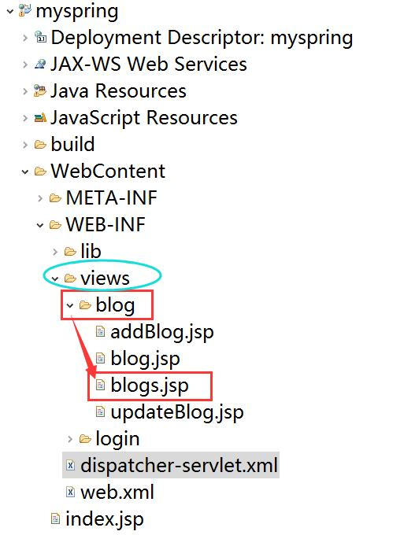
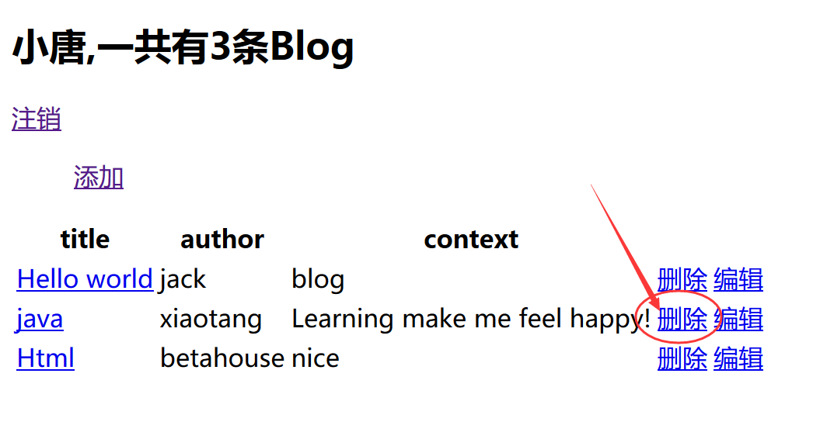

spring映射
简单的页面跳转
1 | <a href="blog">blogs页面</a> |
1 |
|
- 超链接地址
href要对应控制器的映射地址@RequestMapping("/blog")，这样才会调用映射的方法。 ModelAndView mav = new ModelAndView("blog/blogs")或者mav.setViewName("blog/blogs")都能用来设置显示 blog文件夹 下的blogs.jsp页面。

因为在dispatcher-servlet.xml中配置过视图解析器如下
1 | <bean class="org.springframework.web.servlet.view.InternalResourceViewResolver"> |
InternalResourceViewResolver会把返回的视图名称都解析为InternalResourceView对象，InternalResourceView会把Controller处理器方法返回的模型属性都存放到对应的request属性中InternalResourceViewResolver会给它加上定义好的前缀和后缀，组成/WEB-INF/views/xxx.jsp的形式。如之前的例子，则是显示/WEB-INF/views/blog/blogs.jsp。
重定向redirect
redirect 可以重定向到某个controller映射。
如下图，如果我要点击删除一条记录，然后再跳回这个页面。就需要用到请求重定向。

1 | (value = "delete/{id}",method = RequestMethod.GET) |
因为我们需要返回到原来的页面，但是需要重新获取、显示数据，我们就不能只是简单的通过mav.setViewName("blog/blogs")显示这个视图，而是要调用映射到这个页面的方法，在通过这个方法获取数据，再显示到blogs.jsp页面上，也就是如下的方法。
1 |
|
现在页面的URL是http://localhost:8080/myspring/blog，如果不使用redirect (即mav.setViewName("blog/blogs")) ，点击超链接，则URL变成http://localhost:8080/myspring/blog/delete/36,会显示没有映射的警告且不会有页面显示。